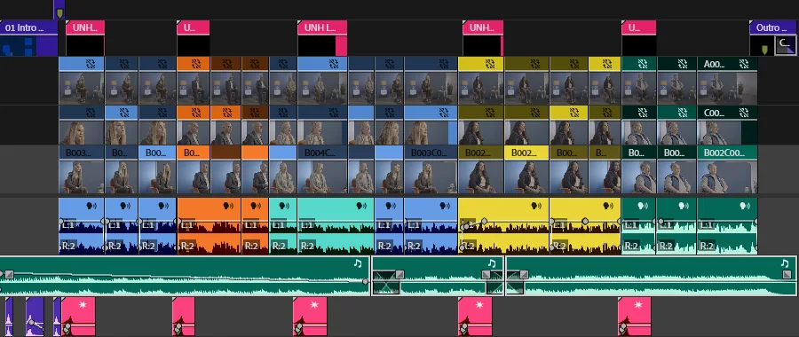
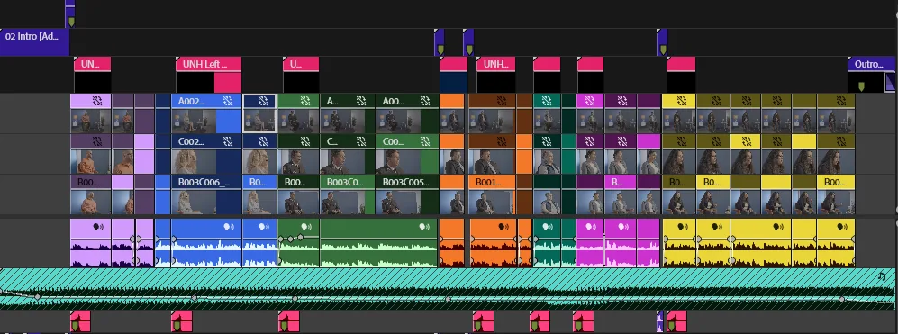
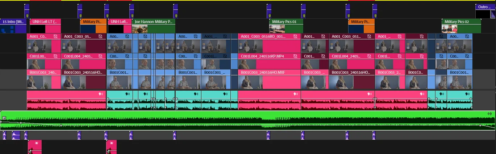

In a series of 14 topic and program-specific videos ranging from the Fire Service Administration program to Military & veteran affairs, this was one of our flagship aggregate videos featuring as many of our participants as we could fit to spotlight the value of UNH's suite of programs geared towards working professionals looking to continue their education or pivot into a new industry.
This project was an exercise in volume. We had over a dozen stories to tell (and ended up with more than we originally scoped) and over two dozen interviews to comb through, catalogue, and sort into those narratives.
The greatest feat of this project was, without a doubt, the level of organization I was able to maintain. In a lot of ways, it seemed more like we were making a documentary than a suite of marketing videos.


